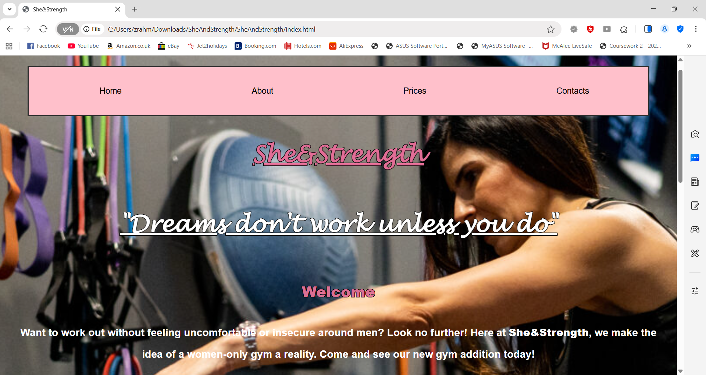
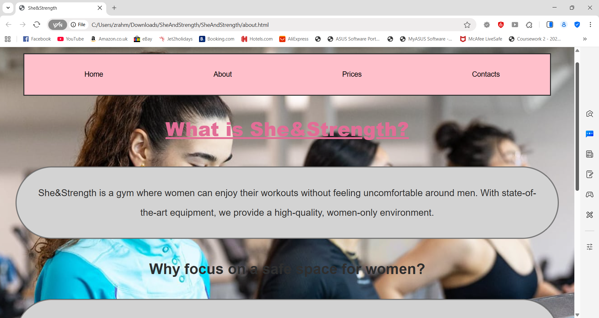
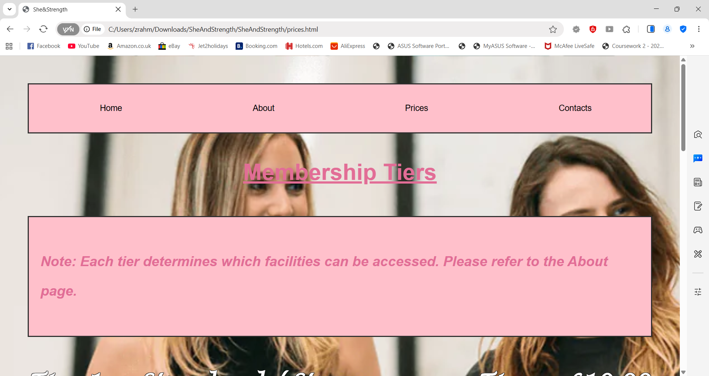
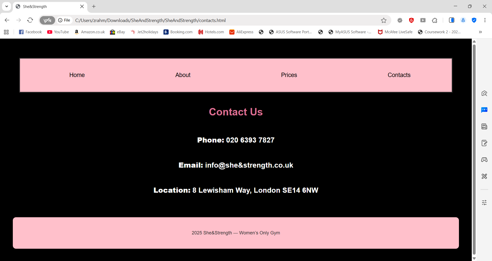

"She&Strength fitness" website
She&Strength fitness is a website made for a group project with some of my peers. The purpose of this website was to design a resourceful fitness site for a female only gym.
   This project was built with HTML and CSS to look eye catching and appealing to a female audience with a home, about, prices and a contacts page,